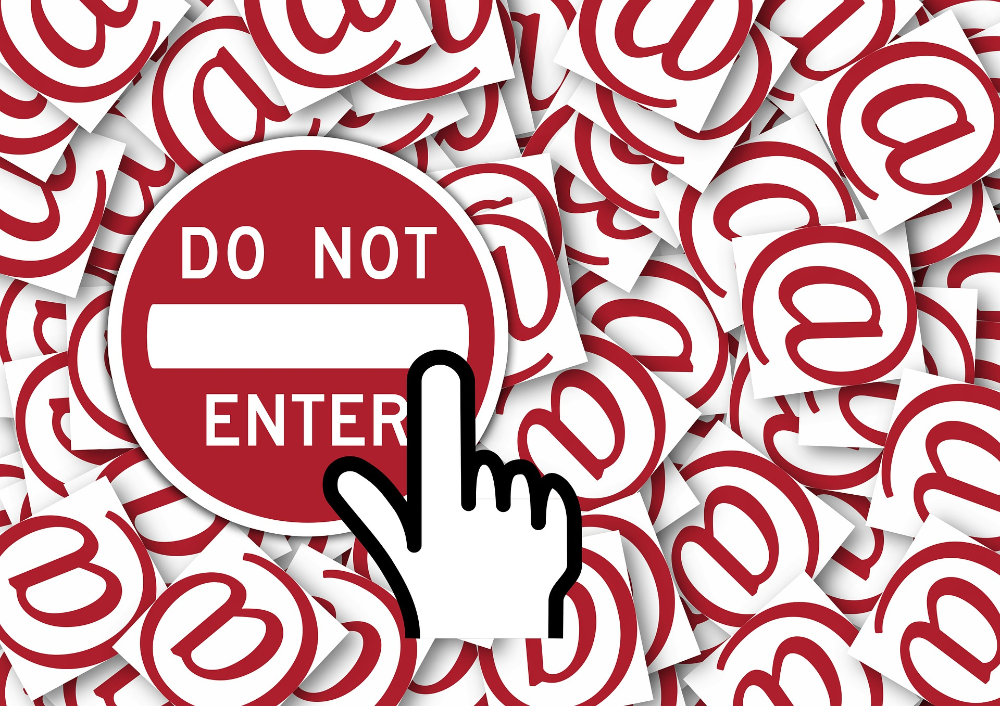
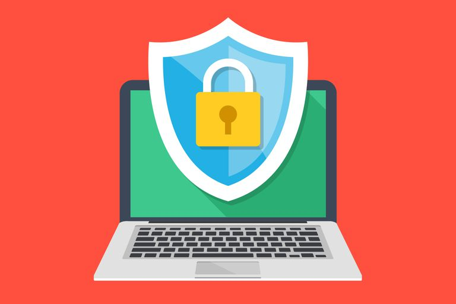
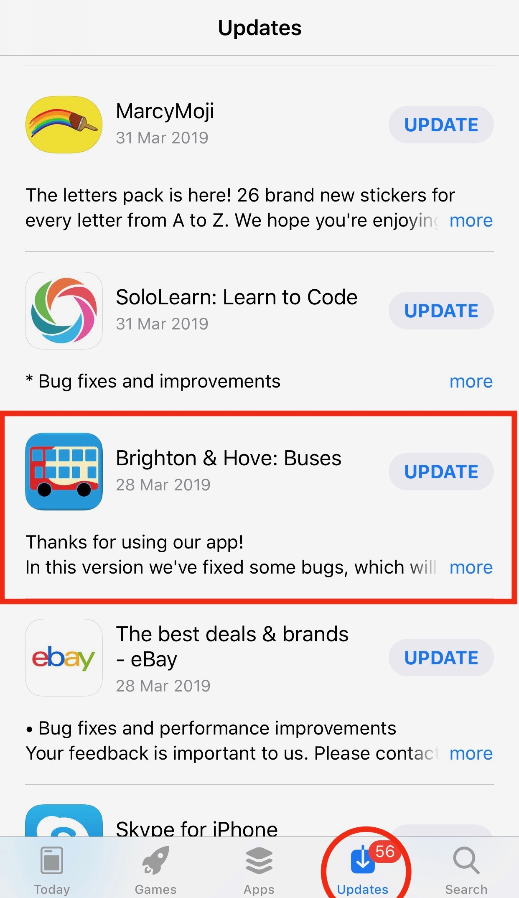
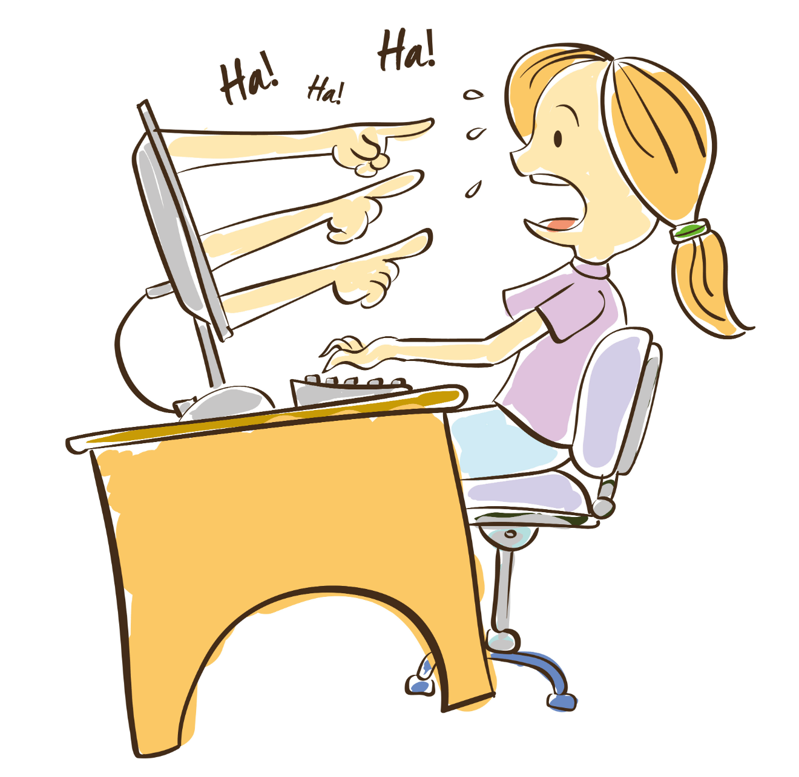

While exploring the World Wide Web there are different factors that have to be accounted for in order to stay safe! One of them being Data privacy and Identity Theft.
“Data Privacy, deals with the ability an organization or individual has to determine what data in a computer system can be shared with third parties”. https://searchcio.techtarget.com/definition/data-privacy-information-privacy
Data privacy is very important, it stops your data from being passed on to different people and the less big organisations such as the government have of you, the less control they have and power they have over you as an individual.
Your data can be passed on through different ways such as, social media (Name, age, etc..) email and chat rooms. So, it is advised to be extra careful when sharing your data via these platforms. One way your data can be passed on is through cookies.
Cookies
Another way of ensuring your data is kept private is blocking cookies on your browser.
Cookies are small types of data that are saved on your computer. They contain data from websites you have visited. With these cookies, people can track what you have been visiting and also personal information you could have left while visiting the site.
There are 3 types of computer cookies all in the form of data:
Session cookies: temporary cookies, that memorize online activity. E.g. online shopping
Persistent cookies: also, known as first party cookies. Work by tracking online preferences while browsing the net. E.g. remembering login information
Third Party cookies: also, tracking cookies. Collect your data while you browse online. Tracks your online behavior and which sites you visit frequently.
However, there are now laws under the Data Protection Act (DPA) and other legislations which control the cookies that are placed on to your computer. Subsequently, when you now visit sites it will ask you whether you want to accept the sites cookies. You should regularly delete cookies from your computer and clear browsing history ; as well logging out of social media accounts and emails after use.
There laws and regulations in place to help keep your data private. One of the most recent laws in order to help data privacy of people is GDPR.
GDPR
GDPR is a regulation that has been put in place to prevent your data being shared without your knowledge. GDPR requires that sites let you know they are storing cookies on your computer, so you are very much aware of the type of data (like cookies) that are being stored on your computer.
For example: when you are eating a packet of sweets, sometimes you share your sweets and other times you do not want to share, which is a decision you can make. If someone wants your sweet, they would ask you “May I have one?” and you are within your rights respond with either yes or no, as the sweets belong to you. Someone wouldn’t just take your sweets without your permission. This what GDPR tries to prevent but in terms of sharing your data across the internet to third parties.
Any site you visit and leave your details with, like your name, email, age and address, etc.… it was within the law previously for these sites to pass your data on to other third parties without your permission. Now it is against the law for such to happen.
Identity Theft
If you do not protect your data, especially while browsing the net, it can result in identity theft.
What is identity theft?
Identity theft is a crime in which a fraudster (someone who claims to be something else) steals another person’s name and personal information and impersonates that person.
Identity theft can a result from lack of data protection or a lack of keeping personal information discrete.
“1 in 15 people fell victims of identity fraud last year”.
“Identify theft is one of the most common results of data breaches. 31.7% of breach victims experienced ID theft”.
Where can identity theft take place?
· Online through social media, Facebook, Instagram, Snapchat, Twitter
Signs of identity theft:
Mysterious/ unknown transactions from bank account
Finding a profile on social media website with the same name and pictures as you.
Emails being sent and received in your name.
How to prevent Identity Theft:
Keep your personal data private
Do not share your personal information such as home address, name, telephone number, date of birth to anyone online you have not met or without the supervision of your parents.
Change your password every 3 months
Do not make your passwords anything easy such as your birthdate; ensure your passwords are strong and contain letters, numbers and symbols.
Ensuring there is protection on your devices that have access to the internet. Such as; Norton, Kaspersky.
https://www.youtube.com/watch?v=Z6T5fxXa5Qo
Think before you click!

Clicking on links you find online or in an email, particularly when you don’t know who sent it, can lead to websites full of computer viruses. Anonymous links can also be hidden in adverts, friend requests and pictures. If you receive messages from someone you don’t know, it’s a good idea to delete them without opening them. As a general rule, if you don’t know who posted something, don’t click on it. If you find a web-link that looks legitimate, but you aren’t completely sure, right-click on the link (without opening it) and copy the URL into Google Transparency Report. Websites that are currently safe to visit will look like this:
Know who your friends are
Good online friends are respectful and considerate without asking for anything in return. Giving out personal information like your full name, home address or passwords, even if your friend asks, is not safe. If someone you have met online asks for your information, or tells you to do something for them, find an adult you trust and speak to them about it.
Accept no substitutes!
When downloading software you’ve found on the internet, it’s really important that you make sure the website you’re using is a valid service provider. The easiest way to spot a valid site is to look at the address bar at the top of your screen, if the URL begins with “https://www.validCompanyName.com”, then the site is likely safe. Safe sites often have a padlock symbol to the left of the site address, which means that any information your device exchanges with the website is encrypted - this is extra, extra safe.
Be on the look-out for fake sites that have names like “Appl3.com”, which try to trick people into downloading what might appear to be genuine Apple software. You can usually spot fake download sites by their lack of trademark logos, incorrect or missing contact details, or even typos and spelling mistakes. Remember that if you aren’t completely sure that a site is genuine, you should back out of there pronto.
Identity Theft
Identity theft is a crime in which a fraudster (someone who claims to be something else) steals another person’s name and personal information and impersonates that person.
Identity theft is normally a result of lack of data protection and a lack of keeping personal information discrete.
Where can identify theft take place?
Facebook
Instagram
Snapchat
Twitter
Many other places online
Signs of identity theft:
Mysterious/ unknown transactions from bank account
Finding a profile on social media website with the same name and pictures as you.
Emails being sent and received in your name.
How to prevent Identity Theft:
Keep your personal data private
Do not share your personal information such as home address, name, telephone number, date of birth to anyone online you have not met or without the supervision of your parents.
Change your password every 3 months (See Tab 1 for password tips!)
Do not make your passwords anything easy such as your birthdate; ensure your passwords are strong containing letters, numbers and symbols.
Ensuring there is protection on your devices that have access to the internet. Such as; Norton, Kaspersky.
Passwords
Your password may not be safe enough! If your password is a short and simple phrase it may be insecure. A password should be as random as possible which makes guessing it much harder.
Passwords that are based upon people you know, where you live and what you like may be easy to guess by someone who knows you. Even somewhat complicated and random passwords are actually
easy to guess and commonly used. We Live Security has a list of the most popular passwords of 2018,
Some of which inlude:
123456
password
1111111
monkey
football
charlie
There are many programs out there designed to figure out common and simple passwords, a good rule of thumb is: the longer a password is, the harder it is to crack. Every extra character in a password is an extra bit of randomness or "Entropy" which massively decreases the chance of your password being discovered.
How Secure Is My Password.net lets you type in your password to see how long it would take for a computer to guess it! try it here
Your passwords should be different and changed regularly!
You probably have passwords for many different websites online, and they are probably all the same! If somebody were to find out one of your passwords would you care? would it be for one website you may not care about? or would it be for every website you have ever made an account on? all of your personal information
and private conversations could now all be open to the public!
Avoid this and make sure every password you have is different, and even better, change your passwords every few months for added security! A survey of 6,400 people from McAfee shows that "more than 40% of people don't immediately change default passwords".
Be Antivirus
Antivirus software is a really useful tool for filtering out all of the icky bad stuff your device gets exposed to online, a bit like wearing a face mask during flu season. Good antivirus software knows the names of potentially dangerous online content and warns you about it, so you can stay away from unsafe sites and stop dodgy downloads in their tracks.
Please be aware that there is a difference in the amount of protection offered by different antivirus software. Some antivirus do a good job if you only use the internet for browsing or playing games, but are less effective than paid antivirus, which are much safer to use if you are exchanging financial data online. As a rule, if you are using an account with payment details attached (even if it’s only to buy a 99p power-up for your favourite game), you should always use quality antivirus software like Norton, Bitdefender or Kaspersky.

Attention! Your apps need updating
Keep your software up to date. Those notifications that keep popping up to tell you about the latest updates available for your device? Consider installing them. Frequently updating your software to the latest version not only fixes bugs in your favourite mobile games, but also gets rid of weaknesses that hackers can exploit to gain access to your device. If you don’t want automatic updates slowing down your device while in use, consider letting them run while you’re asleep. Not all updates will prompt you that they are available, so be sure to check in with Apple's App Store, Google Play, or look for updates online (see our advice on downloads).

Using apps and services
We are keen to give away information to big business companies to have access to their services, however, should we be giving away as much as we are?
From a recent study in America, done by the entrepreneur, ‘most Americans - 95 percent - are concerned about businesses collecting and selling personal information without permission. Additionally, over 80 percent are more concerned about their online privacy and security today than a year ago.’
Services, such as Facebook and Snapchat, can retain images for years after you upload them using their services as it then belongs to them. People have been caught for crime and other mistake post and photos have caused problems such as job loss.
Although this may seem scary that’s not the case. These apps are safe to use but you have a responsibility to act online as you would in person and with these companies capturing these moments its even more important to be careful what you post and upload online.
How people stay protected and what needs to be done
McAfee recently surveyed a group of 6,500 adults globally to see how they protect and handle personal information. Although, nearly 80 percent of those surveyed have talked with their partners and children about online safety there were some serious issues revealed.
52 percent aren’t sure how to secure connected devices and apps.
More than 40 percent don’t immediately change default passwords.
One third don’t think they can control how companies collect personal information.
33 percent of parents admit they don’t know the risks well enough to explain to children.
Only 37 percent use credit monitoring services.

Know who your friends are
Good online friends are respectful and considerate without asking for anything in return. Giving out personal information like your full name, home address or passwords, even if your friend asks, is not safe. If someone you have met online asks for your information, or tells you to do something for them, find an adult you trust and speak to them about it.
What is cyberbullying?
Bullying is an aggressive behaviour where we are using our power to hurt others repeatedly.
This can happen while travelling to and from to school, in school, or at the playground. What makes the difference between bullying and cyberbullying is that when we are being bullied face-to-face we can prevent it from happening again by avoiding the place where bullying happens, or the people who are bullying us. If this is happening online it can happen 24 hours a day, seven days a week.
When we say ‘cyberbullying’ we mean any kind of bullying that happens online.
Being bullied online can happen in different ways. Nasty messages containing harassing, threatening content. This can happen on social media, in chat rooms or through direct messages. Any kind of behaviour which threatens others and puts others in danger is considered as a criminal offence.“Cyberbullying is not against the law, but harassment or threatening behaviour is. That means if someone keeps making you feel scared on purpose, what they’re doing could be illegal.”
What you should not do if you are being bullied online
If you receive mean messages do not reply because it can make the situation worse
It is a good idea to keep evidence of texts to reach and stop the person who is sending these messages
Do not get involved in bullying others - do not forget it can happen to anyone, including you
Do not forward mean texts or share embarrassing photos of anyone
Things that you should do if you are being bullied
To protect yourself from being cyberbullied you can start with blocking the user who is harassing you but do not forget ignoring it will not make it go away!
Some people think it is cool and feels powerful to bully. If you know someone who is bullying others let that person know it is NOT okay to hurt anyone.
Go offline and leave your device behind for a while – do something else that you can enjoy
Support the person who is being bullied – talk to them about the problem and help the person to report the issue if they haven’t done it yet
Effects of cyberbullying
We can feel that we are alone and have no support. That is NOT true! When we are being bullied, we can feel sad and it can cause pain. Everyone is different and can feel and think different things. If we are repeatedly receiving harassing texts from someone, it can make us feel sad and cause issues with sleeping or trouble eating. We can have less energy and feel hopeless or angry. It is possible to have problems with completing schoolwork too. Bullies acting invincible over the internet can feel powerful. Some of these bullies often say things online that hurts and humiliates others but in real life they are shy and don't show their aggressive behaviour. It is important not to isolate yourself and hide the problem if you are experiencing cyberbullying. Tell your friends and family how you feel.
Never think it is your fault when you are being bullied!
Ways to report cyberbullying
If you think you or someone who you know is being bullied in any way do not stay silent!
There are several ways of reporting cyberbullying. You can talk to an adult who you trust. That can be a teacher or your parents. There are trustworthy websites where you can get help from.
There are some trustworthy sites on our Useful Sites page to check out if you think you or someone is being bullied.
“NO MATTER, you deserve to feel safe. Everyone has the right to live in a safe and violence free atmosphere both at home and at school.”
Business Security
We are keen to give away information to big business companies to have access to their services; however, should we be giving away as much as we are?
From a recent study in America, done by the Entrepreneur, “most Americans - 95 percent - are concerned about businesses collecting and selling personal information without permission. Additionally, over 80 percent are more concerned about their online privacy and security today than a year ago.’”
Although this may seem scary that’s not the case. These apps are safe to use but you have a responsibility to act online sensibly. With these companies potentially capturing your posts and data it’s even more important to be careful what you post and upload online, such as media that could be considered cyber bullying or offensive images.
How people stay protected and what needs to be done
McAfee recently surveyed a group of 6,500 adults globally to see how they protect and handle personal information. Although, nearly 80 percent of those surveyed have talked with their partners and children about online safety there were some serious issues revealed.
‘52 percent aren’t sure how to secure connected devices and apps.
More than 40 percent don’t immediately change default passwords.
One third don’t think they can control how companies collect personal information.
33 percent of parents admit they don’t know the risks well enough to explain to children.
Only 37 percent use credit monitoring services.’
Your Data
Your data is important to businesses due to three main reasons: Advertising, Content Curation and future applications.
Advertising
For advertising, platforms such as Facebook and Twitter will suggest content to ‘follow’ or ‘like’ that is tailored on your previous likes and interests. For example, if you have ‘liked’ Samuel L. Jackson in the past, you will be advertised his upcoming films or potentially clips involving him to try and keep you engaged with the app.
Content Curation
Content curation is used in social media to cater your feed. A feed is how apps such as Facebook display your content it is simply a collection of posts from accounts you follow mixed with some new content they have picked out for you. Your feed is catered with a method to give you more of what you like and less of what you ignore or don’t want to see.
Forbes reported that last year ‘Instagram became one of the most recent platforms to roll out a newsfeed algorithm that prioritizes posts based on a number of factors, including user engagement history and perceived preferences.’ This saw their numbers grow even more and when people opted to give more and more information they found themselves coming back more often due to how tailored to you the app could be.
Future Applications
Future applications include the use of your data and many others to see if there is a large trend of the general users’ likes or dislikes and then using this data to improve their website/service. This was seen on Instagram when they introduced the popular story feature, a way of posting images and video which disappears after a day which allows you to give your friends and followers a look at what you’re up to.
Cyber Security in Companies
Most large-scale companies, specifically banks and companies dealing in sensitive information, will have some form of cyber security policy to prevent any unwanted access or leaking of their private information, for example a bank will not want their customer’s data to be visible to anyone who searches for it. Privacy policies are a formal set of rules which all employees must follow for the company to be as secure as possible, just one person not following these rules can cause massive damage and money loss for a company.
What are we protecting?
In companies, it is the duty of all users of the company’s systems and technology to protect any device that belongs to the company, this includes devices of customers who use their service. This is to prevent unauthorised access, theft of data and destruction of data. The company’s systems and technology can include: computer hardware, email access, password managers and system software such as databases and protocols used within the company.
Companies will have either their own, or an external Cyber Security team whose job it is to enforce the company’s cyber security policy and manage any potential holes or entry points in the company’s systems that would lead to potentially accessing sensitive information.
Threats to security
Employees, although you would assume reasonably trusted by their employer, are one of the biggest threats to security in a company. There is the potential to do damage by accident or on purpose if an employee has full access to their computer and the company’s supporting services and systems. Cyber Security teams in companies ensure that only the right access is given to the correct employees. They also don’t allow shared accounts to access the systems and often have logs of which PC and account has accessed what in case disciplinary actions are required. Disciplinary actions can be as simple as a manager explaining what you’ve done and how it’s wrong; however, more serious breaches could require a loss of job as the action .